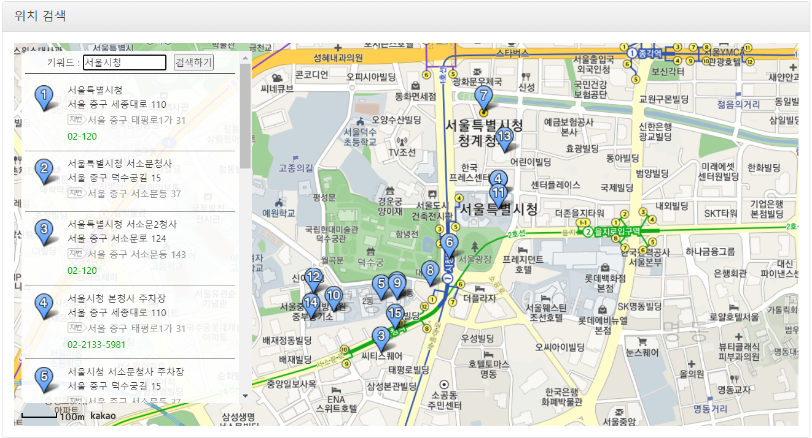
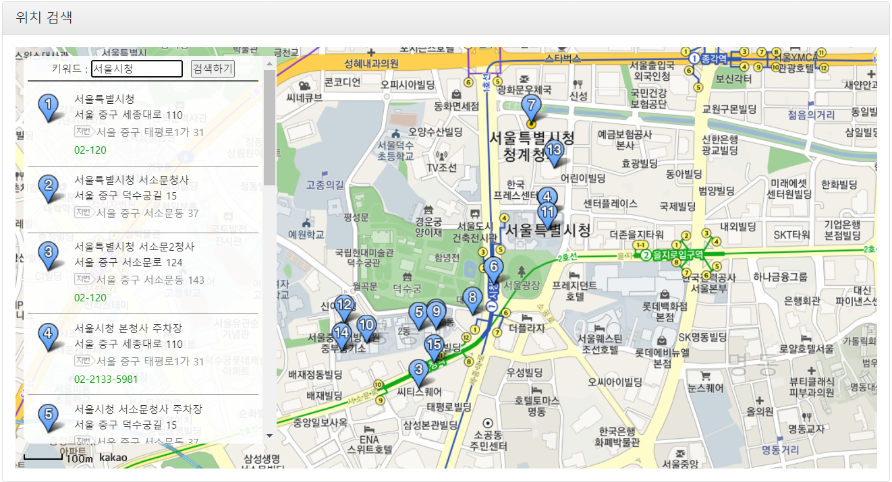
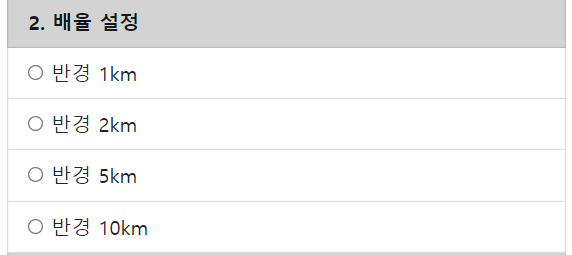
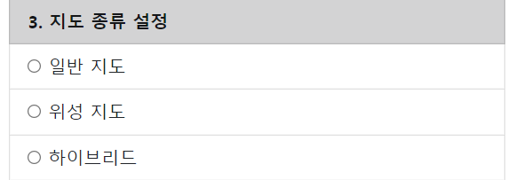
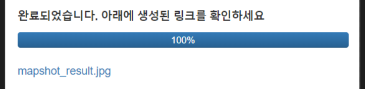

- 1. 위치 검색 및 중심 좌표 설정
-
 

-
지도에 원하는 위치를 클릭하면 해당 지점이 사진의 중심 좌표로 지정되며, 보라색으로 사진이 캡쳐될 범위가 표시됩니다.
키워드를 통해 원하는 장소를 찾거나, 임의로 지도를 움직여 탐색도 가능합니다.
반드시 지도를 클릭해서 중심 좌표를 설정해야 원활한 진행이 가능합니다. - 2. 배율 설정, 지도 종류 설정
-
 
-
배율과 지도 종류는 기본적으로 반경 10km, 위성 지도로 설정됩니다.
지도 종류는 일반지도와 위성지도, 위성지도에 지형지물 명칭이 붙은 하이브리드 3가지가 있습니다
- 3. 조립 시작
-

-
조립 시작 버튼을 누르면, 위의 단계에서 입력한 정보들을 바탕으로 사진 수집을 시작합니다
진행상황은 상태창을 통해 확인 가능하며,
작업 완료 시 완료 문구와 함께 사진을 다운로드 할 수 있는 링크가 제공됩니다.